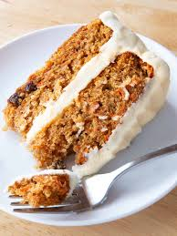

Carrot Cake

Home
Ingredients
- Sugar
- Oil
- Eggs
- Flour
- Vanilla
- Leaveners
- Cinnamon
- Salt
- Carrots
- Pecans
- Butter
- Cream cheese
Steps
- Beat sugar, oil, eggs and vanilla together
- Mix in flour, baking soda, baking powder, cinnamon, and salt; stir in carrots then fold in 1 cup pecans.
- Pour into the pan
- Bake about 40 minutes and cool in pan for 10 minutes then turn onto wire rack and cool completely.
- Beat sugar, cream cheese, butter, and vanilla together until frosting is smooth and creamy.
- Frost cooled cake and enjoy!